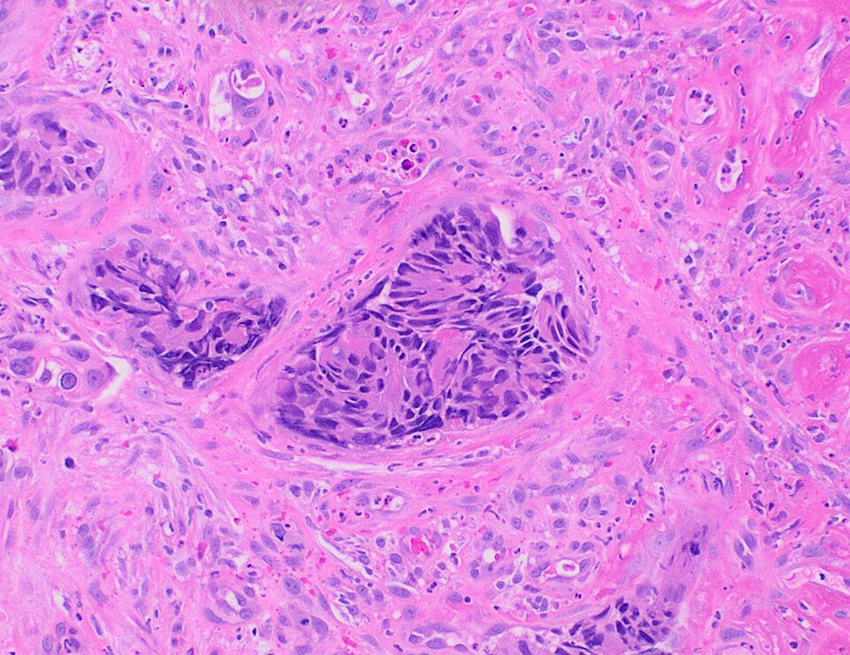

General information only. It does not replace advice from your care team and should not be used to choose a treatment.


At a glance
| How common | 1.9 million cases a year worldwide (third most common) |
| Who | Mostly over 50, but rising in under-50s |
| Origin | Almost always an adenomatous polyp that takes 10-15 years to turn malignant |
| Prevention | Screening with a faecal immunochemical test (FIT) every 2 years and colonoscopy |
| Risk factors | Processed and red meat, alcohol, tobacco, obesity, inactivity, family history |
| Treatment | Surgery; chemotherapy, radiotherapy, targeted therapy and immunotherapy |
| Survival | About 65% at five years; over 90% at stage I |
What it is
The colon (large bowel) and rectum (its final part) absorb water and form stools. Almost all their cancers are adenocarcinomas arising from polyps in the lining. The polyp → cancer sequence takes years, offering a unique chance for prevention.
Rectal cancer has specific treatment features (radiotherapy, pelvic surgery), so it has its own sheet.
Types and biology
- Right colon (caecum, ascending) and left colon (descending, sigmoid) behave differently: the right is more common in women and older people, causes anaemia more than visible bleeding and responds differently to some drugs.
- Key molecular profile in advanced disease:
- RAS (KRAS, NRAS): if mutated, anti-EGFR drugs (cetuximab, panitumumab) do not work.
- BRAF V600E (8-10%): worse outlook, specific treatment.
- Microsatellite instability / dMMR (15% of localised, 4-5% of advanced): excellent response to immunotherapy.
- HER2 amplification (3-5%) and KRAS G12C (3%).
How common it is
It is the third most common cancer worldwide and the second cause of cancer death. There is concern about the rise in people under 50, seen in many countries since the 1990s, whose causes are being studied (obesity, diet, microbiome, antibiotics).
Risk factors
- Age: over 90% occur after 50.
- Processed meat (ham, sausages, bacon; group 1 carcinogen according to IARC) and excess red meat (group 2A).
- Alcohol, tobacco, obesity, physical inactivity, low-fibre diet.
- Long-standing inflammatory bowel disease (ulcerative colitis, Crohn's).
- Family history: one first-degree relative doubles the risk.
- Inherited syndromes (5-10%): Lynch syndrome (the most common), familial adenomatous polyposis (APC), MUTYH-associated polyposis, Peutz-Jeghers syndrome.
- Protective: physical activity, fibre, dairy and calcium; aspirin lowers risk in Lynch carriers (CAPP2 trial).
Prevention and screening
Screening reduces incidence (by removing polyps) and deaths:
- Faecal immunochemical test (FIT) every two years, done at home with a small tube. In the UK it is sent to everyone aged 50 (54 in Wales and Northern Ireland, extending to 50) to 74; the EU recommends 50-74. If positive, a colonoscopy follows.
- Colonoscopy: the reference test. It allows polyps to be removed at once. In the USA, screening starts at 45 and colonoscopy every 10 years is an option.
- People with a family history or inherited syndromes: earlier and more frequent colonoscopies.
- Uptake is still low in some groups; doing the test is the most effective measure.
Symptoms
- Blood in stools or rectal bleeding (red or dark stools).
- Change in bowel habit for more than a few weeks: diarrhoea, constipation, narrower stools.
- Feeling of not emptying the bowel.
- Abdominal pain, bloating.
- Unexplained iron-deficiency anaemia, tiredness, weight loss.
Piles are more common, but bleeding should be checked, especially after 50.
Diagnosis
- Full colonoscopy with biopsy.
- CT of chest, abdomen and pelvis; pelvic MRI for the rectum; liver MRI if in doubt.
- Blood CEA (carcinoembryonic antigen).
- DNA repair testing (dMMR/MSI) in all cases, to guide treatment and detect Lynch syndrome.
- In advanced disease: RAS, BRAF, HER2 and tumour side.
Stages
| Stage | Simplified description | Approx. 5-year survival |
|---|---|---|
| I | Up to the muscle layer, no nodes | 90-95% |
| II | Through the wall, no nodes | 80-85% |
| III | Lymph nodes involved | 60-75% |
| IV | Metastases (liver, lung, peritoneum) | 15-20%; more if operable |
Treatment
Early malignant polyps: endoscopic polypectomy may be enough.
Localised colon cancer: - Colectomy with node removal, by keyhole or robotic surgery where possible. Enhanced recovery programmes shorten hospital stays. - Adjuvant chemotherapy for stage III (FOLFOX or CAPOX; 3 months is usually enough for low-risk tumours, according to IDEA) and high-risk stage II. - New: in locally advanced dMMR tumours, a few doses of immunotherapy before surgery achieve near-complete responses (NICHE-2 study). - Liquid biopsy (circulating tumour DNA) helps decide who needs chemotherapy (DYNAMIC study).
Metastatic disease: - Chemotherapy (FOLFOX, FOLFIRI, FOLFOXIRI) with anti-EGFR (if RAS wild-type and left-sided) or bevacizumab. - Immunotherapy (pembrolizumab, or nivolumab with ipilimumab) for MSI-H tumours, with lasting responses. - BRAF V600E: encorafenib with cetuximab (and chemotherapy first line, BREAKWATER study). - HER2: trastuzumab with tucatinib or trastuzumab deruxtecan; KRAS G12C: sotorasib or adagrasib with anti-EGFR. - Later lines: trifluridine-tipiracil with bevacizumab, regorafenib, fruquintinib. - Surgery for liver or lung metastases: when they can be removed, some patients are cured. Also ablation, stereotactic radiotherapy and, for the peritoneum, surgery with HIPEC in selected cases.
Outlook
Overall five-year survival is about 65% in Western Europe and has improved thanks to screening and treatment. Even with operable liver metastases, more than a third of patients are alive at five years.
After treatment
- Follow-up with CEA and CT every 6 months for the first 3 years, and colonoscopy at one year and then every 3-5 years.
- Exercise: the CHALLENGE trial (2025) showed that a three-year exercise programme after chemotherapy reduces relapses and improves survival.
- Stomas: many are temporary; stoma nurses teach their care.
- Oxaliplatin nerve damage can last months or years.
What's new
- Neoadjuvant immunotherapy for dMMR tumours.
- Liquid biopsy to guide adjuvant treatment.
- AI-assisted colonoscopy (more polyps detected).
- New KRAS drugs and vaccines in research for Lynch syndrome.
Questions for your team
- Does my tumour have microsatellite instability? RAS or BRAF mutations?
- Do I need chemotherapy after surgery? For how long?
- Will I need a stoma? Will it be temporary?
- Should my relatives have an earlier colonoscopy?
Further information
See also: Rectal cancer, Anal cancer, Inherited risk and genetic counselling, Diet and exercise.
History · Medicapedia
Colorectal cancer in the history of medicine
How it was discovered, who studied it and how its treatment changed over the centuries, told on Medicapedia, our sister site on the history of medicine.
Read the history on Medicapedia ↗Sources
- Cervantes A, et al. Metastatic colorectal cancer: ESMO Clinical Practice Guideline. Ann Oncol. 2023;34:10-32. doi:10.1016/j.annonc.2022.10.003
- Argilés G, et al. Localised colon cancer: ESMO Clinical Practice Guidelines. Ann Oncol. 2020;31:1291-1305. doi:10.1016/j.annonc.2020.06.022
- Grothey A, et al. Duration of adjuvant chemotherapy for stage III colon cancer (IDEA). N Engl J Med. 2018;378:1177-1188. doi:10.1056/NEJMoa1713709
- Tie J, et al. Circulating tumor DNA analysis guiding adjuvant therapy in stage II colon cancer (DYNAMIC). N Engl J Med. 2022;386:2261-2272. doi:10.1056/NEJMoa2200075
- Courneya KS, et al. Structured exercise after adjuvant chemotherapy for colon cancer (CHALLENGE). N Engl J Med. 2025.
- Bouvard V, et al. Carcinogenicity of consumption of red and processed meat. Lancet Oncol. 2015;16:1599-1600. doi:10.1016/S1470-2045(15)00444-1
- NHS. Bowel cancer screening. nhs.uk